ГОСУДАРСТВЕННЫЙ КОМИТЕТ СССР ПО ДЕЛАМ СТРОИТЕЛЬСТВА
ГОССТРОЙ СССР
|
СНиП I-1-74 |
СТРОИТЕЛЬНЫЕ НОРМЫ И ПРАВИЛА |
|
Часть I |
ОБЩИЕ ПОЛОЖЕНИЯ |
|
Глава I |
Система нормативных документов Утверждены постановлением
Государственного комитета Совета Министров СССР |
МОСКВА СТРОЙИЗДАТ 1980
СОДЕРЖАНИЕ
Издание главы СНиП I-1-74*. «Система нормативных документов» подготовлено на основе главы СНиП I-1-74, разработанной Отделом технического нормирования и стандартизации Госстроя СССР, а также изменений и дополнений, утвержденных постановлениями Госстроя СССР от 10 августа 1978 г. № 163, от 29 декабря 1978 г. № 274 и от 11 июня 1979 г. № 86.
С введением в действие этой главы утрачивают силу глава СНиП I-A.1-62 «Строительные материалы, изделия, конструкции и оборудование. Общая часть», глава СНиП II-А.1-62 «Нормы строительного проектирования. Общая часть», глава СНиП III-A.1-62 «Организация и технология строительного производства. Общая часть» и «Инструкция о порядке разработки и утверждения нормативных документов по строительству» (СН 395-69).
Редакторы - инженеры В.Н. Смирнов, А.Н. Шкинев и О.И. Косов (Госстрой СССР).
|
Государственный комитет (Госстрой СССР) |
Строительные нормы и правила |
|
|
Система нормативных документов |
Взамен |
1.1.* В настоящей главе Строительных норм и правил (СНиП) устанавливается порядок разработки новых, пересмотра действующих нормативных документов, представления этих документов на утверждение и согласование, введения в действие и издания, а также порядок их регистрации, хранения и информации о них.
Примечание. Правила настоящей главы не распространяются на стандарты в строительстве, порядок разработки, рассмотрения и издания которых установлен в ГОСТ 1.0-68 - ГОСТ 1.5-68 «Государственная система стандартизации».
1.2. Основными задачами строительных норм и правил является установление на основе достижений науки и техники единых требований к проектированию и строительству, предусматривающих снижение сметной стоимости, повышение качества и сокращение сроков строительства, применение наиболее рациональных решений при застройке городов, населенных пунктов, строительстве предприятий, зданий и сооружений, экономное использование материальных ресурсов, повышение уровня индустриализации и производительности труда в строительстве, улучшение условий труда и быта, охраны окружающей среды, рациональное использование природных ресурсов.
1.3.* Строительные нормы и правила (СНиП) устанавливают основные требования по вопросам проектирования и строительства городов и населенных пунктов, предприятий, зданий, сооружений, конструкций и инженерного оборудования и определения их сметной стоимости.
________
*Переиздание с изменениями, принятыми на июнь 1979 г.
Кроме СНиП по отдельным вопросам проектирования и строительства выпускаются:
нормы отвода земель, нормы продолжительности проектирования и строительства объектов, нормы задела в строительстве, нормы расхода строительных материалов, конструкций и изделий на капитальное строительство, нормы технологического проектирования, нормы выработки и расценки на строительные и ремонтно-строительные работы, санитарные нормы проектирования промышленных предприятий и др.;
правила устройства электроустановок, правила о договорах на выполнение проектных и изыскательских работ для капитального строительства и др.;
инструкции, устанавливающие нормы и правила: проектирования предприятий отдельных отраслей промышленности, а также зданий и сооружений различного назначения, конструкций и инженерного оборудования; производства отдельных видов строительно-монтажных работ; применения материалов, конструкций и изделий; по организации проектно-изыскательских работ, механизации работ, нормированию труда и разработке проектно-сметной документации в строительстве и др.
1.4. Ведомственные и республиканские нормативные документы не должны содержать требований, регламентируемых общесоюзными нормативными документами.
|
Внесены Отделом технического
нормирования |
Утверждены постановлением от 29 июля 1974 г. № 158 |
Срок введения в действие 1 апреля 1975 г. |
1.5.* Нормы и правила, связанные со строительным проектированием и строительством предприятий, зданий и сооружений, утверждаемые в установленном порядке соответствующими министерствами и ведомствами СССР и органами Государственного надзора, подлежат согласованию с Госстроем СССР.
Дата и номер письма Госстроя СССР о согласовании с ним этих норм и правил должны быть указаны на титульном листе нормативного документа.
1.6.* Научно-исследовательские и проектные организации, являющиеся ведущими исполнителями-разработчиками проектов нормативных документов по проектированию и строительству, при необходимости разрабатывают и издают руководства к этим нормативным документам.
Руководства должны содержать вспомогательные данные для проектирования и строительства, как правило, к главам СНиП.
Рекомендации разрабатываются научно-исследовательскими институтами на основе результатов научных исследований и должны быть направлены на дальнейшее совершенствование проектирования и строительства.
Организации, разрабатывающие и издающие руководства и рекомендации, несут ответственность за правильность включенных в них данных, а также их техническую и экономическую обоснованность.
Руководства и рекомендации не являются нормативными документами.
1.7. Требования к проектированию и строительству предприятий, зданий и сооружений и их оборудованию, строительным конструкциям, деталям и изделиям, устанавливаемые в нормативных документах по строительству и стандартах, должны быть взаимно увязаны.
Нормы технологического проектирования должны быть увязаны со строительными нормами и правилами и инструкциями по проектированию предприятий, зданий и сооружений, санитарными нормами и другими нормативными документами по строительству.
1.8.* Организации, разработавшие проекты нормативных документов, несут ответственность:
за соответствие требований нормативных документов новейшим достижениям науки и техники;
за отражение в нормативных документах требований, направленных на снижение стоимости, сокращение сроков и повышение качества строительства, на внедрение рациональных решений, улучшение использования материальных ресурсов, повышение уровня индустриализации и производительности труда в строительстве, улучшение условий труда и быта, охрану окружающей среды, рациональное использование природных ресурсов;
за правильность включенных в нормативные документы требований и их техническую и экономическую обоснованность;
за соответствие нормативных документов действующему законодательству, государственным стандартам и их взаимную увязку, за правильность формул, текстового, цифрового и графического материала, а также терминологии.
В случаях, когда при введении в действие нормативного документа необходимо изменить, дополнить или признать утратившими силу требования, установленные действующими законодательными актами, государственными стандартами или другими нормативными документами, должны быть представлены соответствующие обоснованные предложения;
за качество нормативных документов, а также за разработку их в установленные сроки;
за своевременное представление в необходимых случаях технико-экономически обоснованных предложений о внесении изменений и дополнений в действующие нормативные документы.
1.9. Нормативные документы по строительству должны приводиться в соответствие с общесоюзными нормативными документами по строительству по мере утверждения новых, пересмотра действующих и внесения в них изменений и дополнений.
2.1. Строительные нормы и правила (СНиП) состоят из четырех частей (прил. 1*):
I - Общие положения;
II - Нормы проектирования;
III - Правила производства и приемки работ;
IV - Сметные нормы и правила (с приложением сборников сметных норм).
Каждая часть подразделяется на отдельные главы, которые издаются самостоятельно.
2.2.* Часть I СНиП «Общие положения» устанавливает систему нормативных документов, строительную терминологию.
2.3.* Часть II СНиП «Нормы проектирования» содержит требования: по общим вопросам проектирования (строительная климатология и геофизика, противопожарные нормы, строительная теплотехника, нагрузки и воздействия, строительство в сейсмических районах и др.); по основаниям и фундаментам, строительным конструкциям, инженерному оборудованию и внешним сетям; сооружениям транспорта; гидротехническим и энергетическим сооружениям; планировке и застройке городов, поселков и сельских населенных пунктов, жилых и общественных зданий и сооружений; производственным и вспомогательным зданиям, а также по сооружениям промышленных предприятий; сельскохозяйственным зданиям и сооружениям; складским зданиям и сооружениям.
2.4.* Часть III СНиП «Правила производства и приемки работ» содержит требования: по общим вопросам организации строительства, приемки в эксплуатацию законченных строительством предприятий, зданий и сооружений; геодезическим работам; технике безопасности; по производству и приемке работ при возведении земляных сооружений, оснований и фундаментов, строительных конструкций, транспортных, энергетических и гидротехнических сооружений; по монтажу инженерного и технологического оборудования зданий и сооружений и внешних сетей.
2.5. Часть IV СНиП «Сметные нормы и правила» содержит указания по: разработке элементных и укрупненных сметных норм на строительные работы; составлению сметных норм на монтаж оборудования; определению сметной стоимости оборудования; определению сметной стоимости материалов, конструкций и эксплуатации строительных машин; определению норм лимитированных и прочих затрат; определению сметной стоимости строительства.
3.1.* Разработка новых и пересмотр действующих общесоюзных, ведомственных и республиканских нормативных документов по строительству производится по планам, утвержденным в установленном порядке.
Указанными планами предусматривается также разработка руководств и рекомендаций, издаваемых научно-исследовательскими и проектными организациями в соответствии с п. 1.6* настоящей главы.
3.2.* Предложения по разработке нормативных документов по строительству, утверждаемых Госстроем СССР, для включения в проект Плана пересмотра действующих и разработки новых нормативных документов и государственных стандартов по строительству и архитектуре представляются министерствами и ведомствами СССР и Советами Министров союзных республик или госстроями союзных республик по форме прил. 2. Ведущей организацией-исполнителем по разработке общесоюзных нормативных документов по строительству, как правило, должен быть головной проектный институт по соответствующей отрасли народного хозяйства, промышленности или видам строительства или научно-исследовательский институт, ответственный за разработку важнейших научных проблем по соответствующей отрасли и вопросу строительства и промышленности.
3.3.* Ведущая организация - исполнитель разработки нормативных документов совместно с организациями-соисполнителями должна составлять техническое задание на разработку нормативного документа по форме, приведенной в прил. 2а*, согласовывать его с органом, утверждающим нормативный документ, и представлять задание на утверждение в вышестоящий орган по подчиненности.
3.4. Изложение нормативных документов должно соответствовать требованиям, указанным в прил. 3*. Обложки, титульные листы и первые страницы нормативных документов по проектированию и строительству должны выполняться по формам и образцам прил. 4 - 12.
Для каждой части СНиП в целях удобства пользования устанавливаются цветные вертикальные полосы на левой стороне обложек (прил. 4): I части - красный, II части - синий, III части - зеленый, IV части - коричневый.
3.5. Проект нормативного документа, разработанный ведущей организацией-исполнителем и согласованный с организациями-соисполнителями, с пояснительной запиской должен ею рассылаться на заключение заинтересованным министерствам и ведомствам, предприятиям, организациям и учреждениям, а также соответствующим органам Государственного надзора.
3.6. Заключения по проектам нормативных документов, разосланных в соответствии с п. 3.5 настоящей главы, должны представляться ведущей организации-исполнителю министерствами, ведомствами, органами Государственного надзора, предприятиями, организациями и учреждениями не позднее чем через 30 дней со дня поступления к ним проекта.
Заключения должны быть обоснованы и изложены кратко и четко с редакцией изменяемых пунктов документа или дополнений к нему.
3.7. Заключения по проекту нормативного документа должны быть рассмотрены ведущей организацией-исполнителем с участием организаций-соисполнителей и систематизированы в сводку заключений в последовательном порядке по пунктам нормативного документа. Решения об отклонении предложений должны иметь обоснования, приводимые в сводке заключений, составляемой по форме прил. 13*.
3.8.* Проект нормативного документа, откорректированный по замечаниям, должен быть рассмотрен научно-техническим (техническим, ученым) советом ведущей организации-исполнителя с участием организаций-соисполнителей.
Проект нормативного документа, направляемый на утверждение или согласование в Госстрой СССР, должен быть рассмотрен также научно-техническим (научным) советом министерства или ведомства, представляющего этот документ.
3.9.* В случае разногласий по отдельным принципиальным вопросам проекта нормативного документа министерство, ведомство, предприятие, организация или учреждение, представляющие документ на утверждение, обязаны рассмотреть эти разногласия с заинтересованными сторонами и несогласованные вопросы вынести на решение утверждающего органа.
Разногласия по проекту нормативного документа, возникающие между министерствами и ведомствами или между министерствами, ведомствами и органами Государственного надзора, оформляются совместным протоколом, составленным по форме, приведенной в прил. 2в*.
3.10.* Проект нормативного документа представляется на утверждение в пяти экземплярах с пояснительной запиской в двух экземплярах. Кроме этого, в одном экземпляре представляются:
копия утвержденного технического задания на разработку документа;
проект нормативного документа, рассылавшегося на заключение;
сводка заключений по проекту нормативного документа;
копии писем органов Государственного надзора о согласовании нормативного документа;
протоколы научно-технических (научных, технических, ученых) советов министерства, ведомства и ведущей организации;
патентный формуляр, свидетельствующий о патентной чистоте (патентоспособности) нормативного документа, или справка о том, что он не подлежит проверке на патентную чистоту (с необходимыми обоснованиями);
данные о технико-экономической эффективности внедрения нормативного документа по форме, приведенной в прил. 2б*;
протоколы разногласий по проекту нормативного документа, составленные по форме, приведенной в прил. 2в*;
перечень министерств, ведомств, предприятий, организаций или учреждений, которым рассылался нормативный документ на заключение, с указанием о получении заключения;
копии заключений министерств, ведомств, предприятий, организаций или учреждений, которым рассылался документ.
3.11* Пояснительная записка к проекту нормативного документа должна содержать:
обоснование требований, включенных в проект нормативного документа, их народнохозяйственной целесообразности и расчеты технической и экономической эффективности от введения в действие нормативного документа;
сравнение принятых в проекте нормативного документа требований с действующими отечественными и зарубежными аналогичными нормативными документами, а также данными передового опыта проектирования и строительства;
перечень источников, использованных при разработке нормативного документа (научно-исследовательские работы, экспериментальные проекты и экспериментальное строительство, результаты испытаний, производственные показатели, научно-техническая и справочная литература и др.);
перечень нормативных документов, подлежащих отмене, изменению и дополнению в связи с утверждением нового нормативного документа, и предложение о сроке введения его в действие.
По несогласованным вопросам проекта нормативного документа в пояснительной записке излагаются существо принципиальных разногласий, их технико-экономические обоснования и предложения сторон.
3.12.* Вносимый на утверждение проект нормативного документа, пояснительная записка к нему и каждое приложение подписываются на последней странице руководителями ведущей организации-исполнителя и организаций-соисполнителей и заверяются печатью.
3.13. Проекты общесоюзных нормативных документов по строительству, утверждаемые Госстроем СССР, представляются министерствами и ведомствами по подчиненности ведущих организаций-исполнителей.
Проекты общесоюзных нормативных документов по жилищно-гражданскому строительству, подлежащие утверждению Госстроем СССР, вносятся Госгражданстроем.
Проекты общесоюзных нормативных документов, разработанные организациями и учреждениями Госстроя СССР, вносятся на утверждение этими организациями и учреждениями.
3.14. Проекты нормативных документов должны представляться на согласование в Госстрой СССР министерствами (ведомствами) СССР и органами Государственного надзора. Проекты нормативных документов представляются в двух экземплярах с приложением в одном экземпляре пояснительной записки и сводки заключений.
3.15. Проекты нормативных документов, подлежащих утверждению или согласованию с Госстроем СССР, рассматриваются и представляются структурными подразделениями Госстроя СССР, ответственными за соответствующий раздел Плана пересмотра действующих и разработки новых нормативных документов и государственных стандартов по строительству и архитектуре.
Рассмотрение и представление на утверждение или согласование проектов нормативных документов в министерствах и ведомствах СССР и Советах Министров союзных республик производится в соответствии с порядком, установленным этими органами.
4.1.* Срок введения в действие нормативного документа должен быть установлен с таким расчетом, чтобы изданный документ поступил в книготорговую сеть или заинтересованным организациям не позднее чем за три месяца до срока введения его в действие. Этот срок является предельным, до наступления которого разрешается применение отменяемого нормативного документа (или отдельных изменяемых, отменяемых требований).
Министерства, ведомства, Госстрой союзных республик, проектные и строительные организации могут применять для проектирования и строительства вновь разработанные (пересмотренные) строительные нормы, правила, инструкции со дня их утверждения, не ожидая официального срока введения в действие. В этих целях министерства, ведомства и Госстрой союзных республик могут утвержденные (вновь разработанные или пересмотренные) нормативные документы в период до их выпуска Стройиздатом тиражировать полностью или частично (выписки отдельных пунктов) без объявленной цены со снятием грифа «Издание официальное».
В постановлении или приказе об утверждении строительных норм, правил и инструкций должны при необходимости предусматриваться требования, относящиеся к порядку внесения изменений в техническую документацию на строительство, разработанную в соответствии с нормативными документами, которые признаются утратившими силу в связи с утверждением новых.
4.2.* Все нормативные документы по строительству, утвержденные в установленном порядке, регистрируются в книге, составленной по форме прил. 14.
Нормативные документы по строительству, утвержденные Госстроем СССР, регистрируются в Отделе технического нормирования и стандартизации Госстроя СССР.
Ведомственные и республиканские нормативные документы по строительству, утвержденные министерствами и ведомствами, регистрируются, как правило, подразделениями или должностными лицами, на которые возложено осуществление контроля за соблюдением порядка разработки и введения в действие нормативных документов, а также их регистрация и хранение.
4.3. При регистрации нормативным документам присваивается условное обозначение - шифр.
Шифр Строительных норм и правил (СНиП) должен присваиваться в соответствии со структурой СНиП (прил. 1*), утвержденной Госстроем СССР, где номер части обозначается римскими цифрами, номер главы - арабскими цифрами, а две последние цифры соответствуют году утверждения данной главы, например: «СНиП II-31-74».
В шифре других общесоюзных норм, правил и инструкций приводятся сокращенное обозначение «СН», порядковый номер по регистрационной книге, а также последние две цифры, соответствующие году их утверждения, например: «СН 369-74».
В шифре ведомственных нормативных документов при их регистрации приводится сокращенное обозначение «ВСН», порядковый номер по регистрационной книге с добавлением к нему последних двух цифр года утверждения, а также сокращенного названия органа, утвердившего нормативный документ, например:
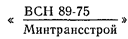
.В шифре республиканских нормативных документов при их регистрации приводится сокращенное обозначение «РСН» порядковый номер по регистрационной книге с добавлением к нему двух последних цифр года утверждения и сокращенного названия органа, утвердившего нормативный документ, например:
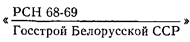
.Если нормативный документ утверждается взамен действующего с тем же названием, то сохраняется его прежний шифр с соответствующим изменением цифр года утверждения.
4.4. После регистрации подлинное дело утвержденного Госстроем СССР нормативного документа со всеми материалами, перечисленными в прил. 15*, должно сдаваться отделом (управлением), ответственным за подготовку его к утверждению, в подшитом и пронумерованном виде на хранение в архив. На экземпляре утвержденного нормативного документа, предназначенном для хранения в архиве Госстроя СССР, при регистрации должен ставиться штамп по образцу, приведенному в прил. 16.
4.5. Копии утвержденного Госстроем СССР нормативного документа в двух экземплярах, в том числе первый экземпляр, отдел (управление), ответственный за подготовку документа к утверждению, должен направлять в издательство.
4.6. Главы СНиП I, II и IV части, сборники изменений и дополнений к СНиП должны издаваться форматом 84×1081/16; главы III части СНиП, а также нормы, правила, инструкции (СН, ВСН, РСН), руководства и рекомендации должны издаваться форматом 84×1081/32.
4.7. Все изданные нормативные документы по строительству, утвержденные в установленном порядке, и изменения и дополнения к ним, а также руководства и рекомендации должны высылаться в Отдел технического нормирования и стандартизации Госстроя СССР и Центральный институт научной информации по строительству и архитектуре (ЦИНИС) Госстроя СССР - каждому в двух экземплярах.
4.8.* Органы, утверждающие нормативные документы, должны обеспечивать их систематическое переиздание.
5.1.* Разработка и подготовка к утверждению изменений и дополнений нормативных документов должны осуществляться в порядке, установленном для разработки новых нормативных документов.
Изменения и дополнения должны вводиться в действие, как правило, с 1 января следующего года.
5.2. Изменения и дополнения должны оформляться согласно прил. 17 с присвоением им порядкового номера и после утверждения регистрироваться в книге регистрации нормативных документов.
5.3. Всю документацию по изменению и дополнению нормативного документа (постановление об утверждении, материалы и обоснования) следует сдавать в архив и приобщать к делу основного нормативного документа.
5.4. При переиздании нормативного документа, имеющего изменения и дополнения, последние должны быть внесены в документ с указанием в аннотации наименования органа, их утвердившего, и даты утверждения. Шифр нормативного документа при этом должен сохраняться с дополнением условным знаком (звездочкой), свидетельствующим о переиздании его с изменениями и дополнениями.
6.1. Информация о действующих общесоюзных нормативных документах по строительству и о внесенных изменениях и дополнениях осуществляется Отделом технического нормирования и стандартизации Госстроя СССР путем ежегодного опубликования Перечня действующих общесоюзных нормативных документов по строительству, а также Сборника изменений и дополнений общесоюзных нормативных документов по строительству (по состоянию на 1 января наступившего года).
6.2. Текущая информация о вновь утвержденных общесоюзных нормативных документах по строительству и о внесенных изменениях и дополнениях в действующие общесоюзные нормативные документы осуществляется отделом (управлением) Госстроя СССР, подготовившим документ к утверждению, и публикуется в журнале «Бюллетень строительной техники» Госстроя СССР.
6.3. Информация об утвержденных ведомственных и республиканских нормативных документах по строительству и о внесенных в них изменениях и дополнениях осуществляется в порядке, установленном органами, их утвердившими.
Указанная информация одновременно с ее опубликованием направляется также в Отдел технического нормирования и стандартизации Госстроя СССР и Центральный институт научной информации по строительству и архитектуре (ЦИНИС) Госстроя СССР.
СТРУКТУРА I, II, III И IV ЧАСТЕЙ
СТРОИТЕЛЬНЫХ НОРМ И ПРАВИЛ (СНиП)
|
Наименование глав Строительных норм и правил |
Шифр глав |
|
ЧАСТЬ I. ОБЩИЕ ПОЛОЖЕНИЯ |
|
|
Система нормативных документов |
I - 1 |
|
Строительная терминология |
I - 2 |
|
ЧАСТЬ II. НОРМЫ ПРОЕКТИРОВАНИЯ |
|
|
Общие нормативные документы |
|
|
Строительная климатология и геофизика. |
II - 1 |
|
Основные положения проектирования |
|
|
Противопожарные нормы проектирования зданий и сооружений |
II - 2 |
|
Строительная теплотехника |
II - 3 |
|
Естественное и искусственное освещение |
II - 4 |
|
Строительные конструкции и основания. |
II - 5 |
|
Основные положения проектирования |
|
|
Нагрузки и воздействия |
II - 6 |
|
Строительство в сейсмических районах |
II - 7 |
|
Здания и сооружения на подрабатываемых территориях |
II - 8 |
|
Инженерные изыскания для строительства. |
II - 9 |
|
Основные положения |
|
|
Защита от шума |
II - 12 |
|
Проектирование конструкций, испытывающих динамические нагрузки |
II - 14 |
|
Основания и фундаменты зданий и сооружений |
|
|
Основания зданий и сооружений |
II - 15 |
|
Основания гидротехнических сооружений |
II - 16 |
|
Свайные фундаменты |
II - 17 |
|
Основания и фундаменты на вечномерзлых грунтах |
II - 18 |
|
Фундаменты машин с динамическими нагрузками |
II - 19 |
|
Строительные конструкции |
|
|
Бетонные и железобетонные конструкции |
II - 21 |
|
Каменные и армокаменные конструкции |
II - 22 |
|
Стальные конструкции |
II - 23 |
|
Алюминиевые конструкции |
II - 24 |
|
Деревянные конструкции |
II - 25 |
|
Кровли |
II - 26 |
|
Полы |
II - 27 |
|
Защита строительных конструкций от коррозии |
II - 28 |
|
Инженерное оборудование зданий. Внешние сети |
|
|
Внутренний водопровод и канализация зданий |
II - 30 |
|
Водоснабжение. Наружные сети и сооружения |
II - 31 |
|
Канализация. Наружные сети и сооружения |
II - 32 |
|
Отопление, вентиляция и кондиционирование воздуха |
II - 33 |
|
Горячее водоснабжение |
II - 34 |
|
Котельные установки |
II - 35 |
|
Тепловые сети |
II - 36 |
|
Газоснабжение. Внутренние и наружные устройства |
II - 37 |
|
Сооружения транспорта |
|
|
Железные дороги колеи 1520 мм |
II - 39 |
|
Метрополитены |
II - 40 |
|
Электрифицированный городской транспорт. Трамвайные и троллейбусные линии |
II - 41 |
|
Автомобильные дороги |
II - 42 |
|
Мосты и трубы |
II - 43 |
|
Тоннели железнодорожные и автодорожные |
II - 44 |
|
Магистральные трубопроводы |
II - 45 |
|
Промышленный транспорт |
II - 46 |
|
Аэродромы |
II - 47 |
|
Гидротехнические и энергетические сооружения |
|
|
Гидротехнические сооружения речные. Основные положения проектирования |
II - 50 |
|
Гидротехнические сооружения морские. Основные положения проектирования |
II - 51 |
|
Сооружения мелиоративных систем |
II - 52 |
|
Плотины из грунтовых материалов |
II - 53 |
|
Плотины бетонные и железобетонные |
II - 54 |
|
Подпорные стены, судоходные шлюзы, рыбопропускные и рыбозащитные сооружения |
II - 55 |
|
Бетонные и железобетонные конструкции гидротехнических сооружений |
II - 56 |
|
Нагрузки и воздействия на гидротехнические сооружения (волновые, ледовые и от судов) |
II - 57 |
|
Электростанции тепловые |
II - 58 |
|
Планировка и застройка городов, поселков и сельских населенных пунктов |
|
|
Планировка и застройка городов, поселков и сельских населенных пунктов |
II - 60 |
|
Жилые и общественные здания и сооружения |
|
|
Жилые здания |
II - 62 |
|
Общественные здания и сооружения. Основные положения проектирования |
II - 63 |
|
Детские дошкольные учреждения |
II - 64 |
|
Общеобразовательные школы и школы-интернаты |
II - 65 |
|
Профессионально-технические и средние специальные учебные заведения |
II - 66 |
|
Высшие учебные заведения |
II - 68 |
|
Лечебно-профилактические учреждения |
II - 69 |
|
Санатории |
II - 70 |
|
Оздоровительные учреждения и учреждения отдыха |
II - 71 |
|
Кинотеатры |
II - 73 |
|
Клубы |
II - 74 |
|
Театры |
II - 75 |
|
Спортивные сооружения |
II - 76 |
|
Магазины |
II - 77 |
|
Предприятия общественного питания |
II - 78 |
|
Гостиницы |
II - 79 |
|
Предприятия бытового обслуживания населения |
II - 80 |
|
Здания конструкторских и проектных организаций |
II - 83 |
|
Здания управлений |
II - 84 |
|
Вокзалы |
II - 85 |
|
Промышленные предприятия, производственные и вспомогательные здания |
|
|
Генеральные планы промышленных предприятий |
II - 89 |
|
Производственные здания промышленных предприятий |
II - 90 |
|
Сооружения промышленных предприятий |
II - 91 |
|
Вспомогательные здания и помещения промышленных предприятий |
II - 92 |
|
Предприятия по обслуживанию автомобилей |
II - 93 |
|
Подземные горные выработки |
II - 94 |
|
Сельскохозяйственные предприятия, здания и сооружения |
|
|
Генеральные планы сельскохозяйственных предприятий |
II - 97 |
|
Здания и сооружения для хранения и переработки сельскохозяйственной продукции |
II - 98 |
|
Животноводческие, птицеводческие и звероводческие здания и сооружения |
II - 99 |
|
Теплицы и парники |
II - 101 |
|
Складские здания и сооружения |
|
|
Складские здания и сооружения общего назначения |
II - 104 |
|
Холодильники |
II - 105 |
|
Склады нефти и нефтепродуктов |
II - 106 |
|
Склады сухих минеральных удобрений и химических средств защиты растений |
II - 108 |
|
ЧАСТЬ III. ПРАВИЛА ПРОИЗВОДСТВА И ПРИЕМКИ РАБОТ |
|
|
Общие нормативные документы |
|
|
Организация строительного производства |
III - 1 |
|
Геодезические работы в строительстве |
III - 2 |
|
Приемка в эксплуатацию законченных строительством предприятий, зданий и сооружений. Основные положения |
III - 3 |
|
Техника безопасности в строительстве |
III - 4 |
|
Земляные сооружения. Основания и фундаменты зданий и сооружений |
|
|
Земляные сооружения |
III - 8 |
|
Основания и фундаменты |
III - 9 |
|
Благоустройство территорий |
III - 10 |
|
Подземные горные выработки |
III - 11 |
|
Строительные конструкции зданий и сооружений |
|
|
Бетонные и железобетонные конструкции монолитные |
III - 15 |
|
Бетонные и железобетонные конструкции сборные |
III - 16 |
|
Каменные конструкции |
III - 17 |
|
Металлические конструкции |
III - 18 |
|
Деревянные конструкции |
III - 19 |
|
Кровли, гидроизоляция, пароизоляция и теплоизоляция |
III - 20 |
|
Отделочные покрытия строительных конструкций |
III - 21 |
|
Полы |
III - 22 |
|
Защита строительных конструкций и сооружений от коррозии |
III - 23 |
|
Промышленные печи и кирпичные трубы |
III - 24 |
|
Инженерное и технологическое оборудование зданий и сооружений. Внешние сети |
|
|
Санитарно-техническое оборудование зданий и сооружений |
III - 28 |
|
Газоснабжение. Внутренние устройства. Наружные сети и сооружения |
III - 29 |
|
Водоснабжение, канализация и теплоснабжение. Наружные сети и сооружения |
III - 30 |
|
Технологическое оборудование. Основные положения |
III - 31 |
|
Электротехнические устройства |
III - 33 |
|
Системы автоматизации |
III - 34 |
|
Сооружения транспортные и гидротехнические |
|
|
Железные дороги |
III - 38 |
|
Трамвайные пути |
III - 39 |
|
Автомобильные дороги |
III - 40 |
|
Контактные сети электрифицированного транспорта |
III - 41 |
|
Магистральные трубопроводы |
III - 42 |
|
Мосты и трубы |
III - 43 |
|
Тоннели железнодорожные, автодорожные и гидротехнические. |
III - 44 |
|
Метрополитены Сооружения гидротехнические транспортные, энергетические и мелиоративных систем |
III - 45 |
|
Аэродромы |
III - 46 |
|
ЧАСТЬ IV. СМЕТНЫЕ НОРМЫ И ПРАВИЛА |
|
|
Правила разработки элементных сметных норм на строительные конструкции и виды работ |
IV - 1 |
|
Правила разработки укрупненных сметных норм на здания и сооружения |
IV - 2 |
|
Правила определения сметной стоимости эксплуатации строительных машин |
IV - 3 |
|
Правила определения сметных цен на материалы, изделия и конструкции, сметных цен на перевозки грузов для строительства |
IV - 4 |
|
Правила составления единых районных единичных расценок на строительные работы |
IV - 5 |
|
Правила составления сметных норм (расценок) на монтаж оборудования |
IV - 6 |
|
Правила определения сметной стоимости оборудования |
IV - 7 |
|
Правила составления прейскурантов на строительство зданий и сооружении |
IV - 8 |
|
Правила определения дополнительных затрат при производстве строительно-монтажных работ в зимнее время |
IV - 9 |
|
Правила определения прочих затрат, включаемых в сметы на строительство |
IV - 10 |
|
Нормы для определения в сметах размера средств на строительство временных зданий и сооружений |
IV - 11 |
|
Нормы накладных расходов и плановых накоплений в строительстве |
IV - 12 |
|
Правила разработки сметных норм затрат на инструмент и инвентарь производственных зданий |
IV - 13 |
|
Правила разработки сметных норм затрат на оборудование и инвентарь общественных и административных зданий |
IV - 14 |
|
Правила применения сметных норм |
IV - 15 |
|
Правила определения сметной стоимости строительства |
IV - 16 |
|
№ п.п. |
Наименование нормативного документа |
Стоимость, тыс. руб. |
Сроки |
Наименование организаций, разрабатывающих проект документа (ведущая организация указана первой) |
Утверждающая инстанция |
Цель разработки документа и ожидаемая эффективность от его внедрения |
|||
|
общая |
выполнение на 1.1.19__ г. |
план на 19__ г. |
начала разработки документа |
представления документа ведущей организацией в утверждающую инстанцию |
|||||
|
1 |
2 |
3 |
4 |
5 |
6 |
7 |
8 |
9 |
10 |
|
|
|
|
|
|
|
|
|
|
|
ТЕХНИЧЕСКОЕ ЗАДАНИЕ на разработку__________________________________________________________________ (наименование нормативного документа по плану работ, утвержденному Госстроем СССР) 1. Основание для разработки - указываются наименование плана пересмотра действующих и разработки новых нормативных документов, дата и номер постановления Госстроя СССР об утверждении плана, номер приложения, раздел, позиция. 2. Сроки разработки: начало _______________________ 19__ г. окончание _______________________ 19__ г. 3. Организации, разрабатывающие проект нормативного документа: ведущая организация-исполнитель (сокращенное наименование); организации-соисполнители (сокращенные наименования). 4. Цель разработки нормативного документа - разработка (или пересмотр действующих) норм проектирования или правил производства и приемки работ, направленных на ускорение научно-технического прогресса в строительстве и обеспечивающих повышение эффективности капитальных вложений, экономное расходование основных строительных материалов и использование земель, снижение материалоемкости и стоимости строительства, повышение производительности труда, снижение трудовых затрат при производстве строительно-монтажных работ, сокращение сроков и повышение качества строительства (указываются только те показатели, которые предусматриваются конкретным документом, и приводится предполагаемый экономический эффект в млн. руб. в год, натуральных показателях или процентах как суммарный результат показателей технико-экономической эффективности, определяемой в соответствии с примеч. 2 к п. 5 настоящего образца технического задания). Ожидаемая технико-экономическая эффективность от внедрения нормативного документа приведена в прил. 1 к настоящему техническому заданию. 5. Разделы документа и перечень основных норм (правил и требований). Нормативный документ (указывается наименование нормативного документа по плану работ) должен содержать нормы (правила, требования) по разделам: А. Проектирование предприятий, зданий и сооружений: а) общие положения; б) генеральные планы и транспорт; в) объемно-планировочные и конструктивные решения зданий и сооружений: производственные здания и сооружения; складские здания и сооружения; вспомогательные здания и помещения; г) водопровод и канализация; д) теплоснабжение, отопление, вентиляция и горячее водоснабжение; е) электроснабжение и электротехнические устройства. Б. Проектирование строительных конструкций: а) общие положения; б) материалы; в) расчетные характеристики материалов; г) расчет элементов конструкций; д) расчет соединений элементов; е) указания по проектированию конструкций; ж) требования по обеспечению надежности конструкций. В. Правила производства и премии работ: а) общие положения: б) подготовительные работы; в) , г), д) и т.д. - различные виды и способы производства работ; е) особенности выполнения работ в особых условиях; ж) контроль качества и приемки работ. Примечания: 1. В нормативных документах по проектированию отдельных зданий и сооружений, разрабатываемых в соответствии с подпунктом А, допускается при необходимости не предусматривать раздел «б» и подразделение объемно-планировочных и конструктивных решений в разделе «в» по типам зданий. 2. По разделам нормативных документов, приведенным в подпунктах А, Б, В, в конкретном техническом задании должны быть указаны: перечень основных норм (правил, требований) и ожидаемая от их внедрения технико-экономическая эффективность (в денежном выражении, натуральных показателях, процентах к действующим нормам и т.п.). 3. Наименование разделов нормативных документов для объектов транспорта, инженерных сооружений и сетей, энергетики и др. уточняется с учетом их специфики. 4. При необходимости к нормативному документу даются приложения (схемы, таблицы, примеры расчетов и т.п.), которые должны быть указаны в конкретных технических заданиях. 6. Основные источники - перечисляются материалы, которые используются при разработке проекта нормативного документа (результаты научно-исследовательских работ, экспериментального строительства, обобщения передового отечественного опыта и лучших примеров зарубежной практики а другие материалы, с указанием конкретных отчетов, официальных документов и др.). 7. Этапы работ и сроки их выполнения
Примечание. Сроки выполнения отдельных частей работы организациями-соисполнителями определяются графиками, утвержденными ведущей организацией. Приложения: 1. Технико-экономическая эффективность от внедрения нормативного документа (ожидаемая - по форме прил. 2б*). 2. Перечень организаций, которым должен быть разослан проект нормативного документа на заключение. 3. Перечень организаций, с которыми должен быть согласован проект нормативного документа. Директор (начальник, управляющий) ведущей организации ________________________ (подпись - инициалы и фамилия) Ответственный руководитель работы ___________________________________________ (подпись - инициалы и фамилия) |
ДАННЫЕ О ТЕХНИКО-ЭКОНОМИЧЕСКОЙ ЭФФЕКТИВНОСТИ
ВНЕДРЕНИЯ НОРМАТИВНОГО ДОКУМЕНТА
________ 1Приводятся дополнительные сведения, характеризующие нормативный документ. Например: повышение надежности, долговечности, обеспечение охраны окружающей среды, пожарной безопасности, безопасности труда, унификация и сокращение типоразмеров, причины удорожания и т.д. Директор (начальник, управляющий) ведущей организации ________________________ (подпись - инициалы и фамилия) Ответственный руководитель работы ___________________________________________ (подпись - инициалы и фамилия) |
||||||||||||||||||||||||||||||
|
по проекту нормативного документа ___________________________________________ (наименование документа) _______, передаваемых ______________________________________________________ (наименование министерства или ведомства, представляющего документ на ____________________ и _____________________________________________________
____________________на решение Госстроя СССР ведомства)
|
ИЗЛОЖЕНИЕ НОРМАТИВНЫХ ДОКУМЕНТОВ
1. Изложение требований должно быть кратким (без повторений, пояснений и обоснований) и четким, исключающим возможность различного их толкования.
2. Наименование нормативного документа должно быть кратким и отражать его основное назначение.
Ранее утвержденные «Указания» по проектированию и строительству при пересмотре следует именовать «Инструкциями».
3. В первом пункте нормативного документа должна быть определена область его применения.
При необходимости в этом же пункте указываются ограничения области применения нормативного документа, а также дается конкретная ссылка на другие документы, требования которых необходимо соблюдать при выполнении работ, рассматриваемых в данном документе.
4. Нормативные документы должны содержать лишь требования, имеющие прямое отношение к нормируемому вопросу. Так, например, в нормы проектирования зданий и конструкций не должны включаться требования к объему и содержанию проектов, к порядку проектирования, к производству строительно-монтажных работ, к эксплуатации и т.п.
5. При изложении обязательных требований в тексте нормативных документов должны применяться слова «должен», «следует», «необходимо» и производные от них.
Слова «как правило» означают, что данное требование является преобладающим, а отступление от него должно быть обосновано.
Слово «допускается» означает, что данное решение применяется в виде исключения как вынужденное (вследствие стесненных условий, ограниченных ресурсов необходимого оборудования, материалов и т.п.).
Положения, применение которых ограничивается словами «как правило» и «допускается», в нормативных документах применяются как исключение.
6. При ссылке на другие нормативные документы приводится их наименование без указания шифра, например: «глава СНиП по проектированию жилых зданий».
Ссылка на другие пункты внутри документа делается в следующей форме: «Согласно требованиям п. (№ пункта) настоящих норм (правил, инструкции)».
7. В нормативных документах не должны повторяться требования, изложенные в других нормативных документах, а также требования к материалам, конструкциям, изделиям и оборудованию, изложенные в стандартах и технических условиях.
8. На обороте титульного листа указываются организации-исполнители, разработавшие нормативный документ, их ведомственная принадлежность, наименование и шифр нормативных документов, утрачивающих силу с введением в действие нового утвержденного документа. Наименования министерств, ведомств и организаций приводятся сокращенные, принятые для переписки.
На титульных листах и первых страницах нормативных документов указываются наименования всех органов их утвердивших.
9. Нормативные документы, утвержденные по согласованию с Госстроем СССР, с органами Государственного надзора, а также с другими министерствами и ведомствами СССР, должны иметь соответствующую надпись об этом на титульном листе или на обороте титульного листа ниже данных, предусмотренных в п. 8 настоящего приложения.
10. Разделы и пункты в нормативных документах нумеруются арабскими цифрами. Пункты обозначают номером раздела с добавлением (через точку) порядкового номера. В каждом разделе нумерация пунктов начинается с первого номера, например: «1.1; 1.2; 1.3; 3.1; 3.2; 3.3». При наличии в документе лишь одного раздела, а также во вводных указаниях и пояснениях к нормам времени и подобным им документам с большим табличным материалом, в разделах дается порядковая нумерация пунктов «1, 2, 3…» без обозначения номера раздела.
Разделы могут делиться на подразделы, имеющие заголовки, при этом подразделы не нумеруются и сохраняется сквозная нумерация пунктов по разделу.
11. Подпункты следует начинать с абзаца, они не нумеруются и знаком тире не отделяются. При необходимости подпункты обозначаются строчными буквами русского алфавита со скобкой.
12. Устанавливаемые нормативным документом требования (показатели) должны быть, как правило, однозначными.
При необходимости эти требования могут быть заданы с допускаемыми отклонениями, либо указаны в виде максимальных или минимальных значений (не более, не менее).
13*. В нормативных документах должны применяться единицы физических величин согласно утвержденному Госстроем СССР по согласованию с Госстандартом Перечню единиц физических величин, подлежащих применению в строительстве, разработанному на основе СТ СЭВ 1052-78 «Метрология. Единицы физических величин» и содержащему необходимые в строительстве единицы физических величин СИ, наименования и обозначения этих единиц, рекомендуемые кратные и дольные единицы, а также внесистемные единицы, допускаемые к применению.
В нормативных документах после единиц, установленных указанным Перечнем, следует приводить в скобках их эквивалентные значения, выраженные в единицах, действовавших до 1 января 1980 г., систем, которые применялись в соответствующих нормативных документах по строительству.
14. В нормативных документах должны применяться научно-технические термины, обозначения и определения, установленные общесоюзными нормативными документами и стандартами.
Для новых терминов, отсутствующих в действующих документах, в необходимых случаях дается их определение.
15. Цифровой материал в нормативном документе следует оформлять в виде таблиц со сквозной нумерацией в пределах нормативного документа.
Таблицы помещают без заголовков со ссылкой на них в тексте нормативного документа.
Помещаемые в конце нормативного документа приложения в виде таблиц должны иметь заголовки. Делить головки таблиц на части по диагонали не допускается. При повторении нескольких слов, расположенных в одной и той же графе таблицы, в следующей строке следует писать «То же»; в последующих - ставить кавычки, а при отсутствии данных в графах следует ставить тире.
16. Небольшой по объему цифровой материал, который нецелесообразно оформлять таблицей, должен даваться в виде вывода, например:
«Коэффициенты отражения ограждающих поверхностей в помещениях (в долях единицы) должны быть не менее:
|
для потолков |
0,7 |
|
» верхних частей стен |
0,6 |
|
» панелей стен |
0,5 |
|
» полов |
0,24» |
Выводы в нормативном документе не нумеруются.
17. Интервалы между числовыми значениями величин в таблицах и выводах следует записывать:
«От 50 до 100
Св. 100 » 200
» 200 » 300 ».
18. В тексте нормативного документа единица измерения, общая для ряда (группы) числовых значений, приводится только за последним числом, например:
«5; 8,5; 10; 12 мм;
10×10×40 мм;
20, 50, 100 кг».
19. В тексте нормативных документов не разрешается:
а) применять для одного и того же понятия различные термины, близкие по смыслу (синонимы), а также иностранные слова и термины при наличии равнозначных слов и терминов в русском языке;
б) применять обороты разговорной речи, техницизмы и профессионализмы;
в) применять произвольные словообразования (например, саноборудование, пожнадзор);
г) сокращать обозначения единиц измерения, если они употребляются без цифр, за исключением единиц измерения в головках таблиц и в расшифровке буквенных обозначений, входящих в формулы;
д) применять сокращение слов, кроме установленных стандартами и правилами русской орфографии и пунктуации;
е) заменять слова буквенными обозначениями, например, «L трубы 100 мм» вместо «длина трубы 100 мм»;
ж) использовать в тексте математический знак минус (-) перед отрицательными значениями величин, в том числе для отрицательных температур, вместо этого знака (-) следует писать слово «минус», кроме случаев написания ± (плюс - минус);
з) употреблять математические знаки без цифр, например: = (равно), ≤ (меньше или равно), ≥ (больше или равно), ≠ (не равно), а также № (номер), % (процент).
20. Рекомендуется избегать включения примечаний в текст нормативных документов. В примечаниях к отдельным пунктам или таблицам допускается помещать только поясняющие или справочные данные.
21. Помещаемые в нормативном документе рисунки, в том числе чертежи, схемы, диаграммы, должны быть ясными и четкими; чертежи и схемы должны соответствовать требованиям государственных стандартов Единой системы конструкторской документации. Нумерация рисунков применяется такая же, как и таблиц.
22. Один комплект графических материалов должен представляться выполненным черной тушью на белой бумаге, кальке или в виде фотокопии; остальные комплекты могут представляться в светокопиях. Подрисуночные надписи должны быть отпечатаны на машинке.
23. В приложениях к нормативному документу должны помещаться обязательные или рекомендуемые к применению материалы, дополняющие или развивающие основные требования документа. Материалы справочного характера в приложениях помещаться не должны.
Приложения должны помещаться в порядке ссылок на них в тексте нормативного документа и нумероваться арабскими цифрами (без знака №).
24. В конце нормативного документа должно помещаться его оглавление (содержание), включающее в себя название разделов, подразделов и приложений с указанием номеров страниц.
25. Проекты нормативных документов (включая таблицы и примечания) должны быть напечатаны на пишущей машинке через два интервала на одной стороне листа.
26. При оформлении проектов нормативных документов, кроме требований настоящей главы СНиП, следует руководствоваться требованиями, предъявляемыми издательствами к рукописям технической литературы.
ОБРАЗЦЫ ОФОРМЛЕНИЯ ОБЛОЖЕК ГЛАВ I, II, III И IV ЧАСТЕЙ СНиП1
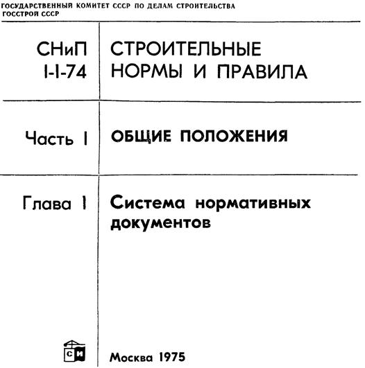
________
1На обложках глав СНиП с левой стороны выполняется вертикальная полоса красного цвета для I части, синего для II части, зеленого для III части и коричневого для IV части.
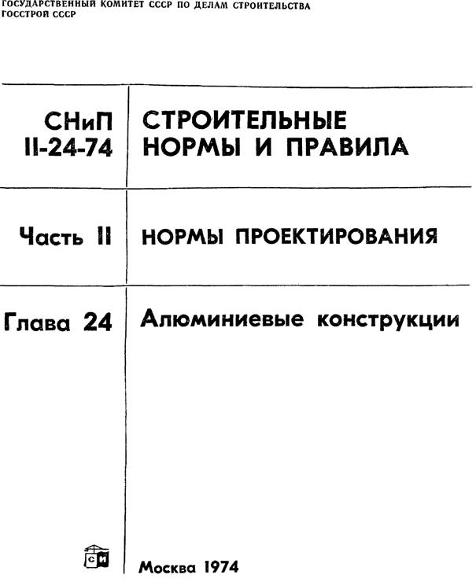
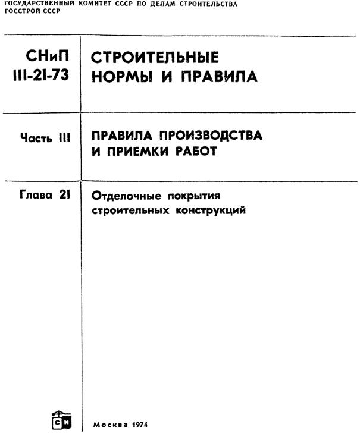
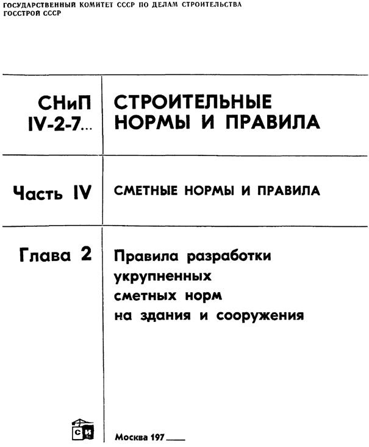
ОБРАЗЦЫ ОФОРМЛЕНИЯ ТИТУЛЬНЫХ ЛИСТОВ ГЛАВ I, II, III И IV ЧАСТЕЙ СНиП
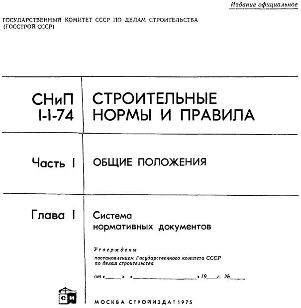
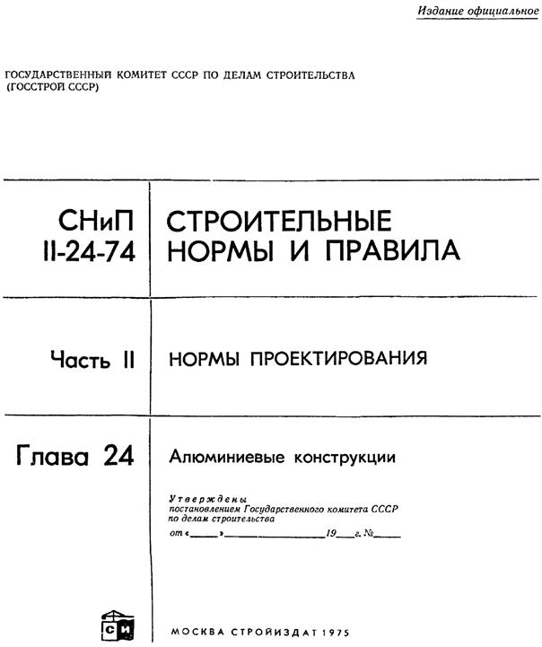
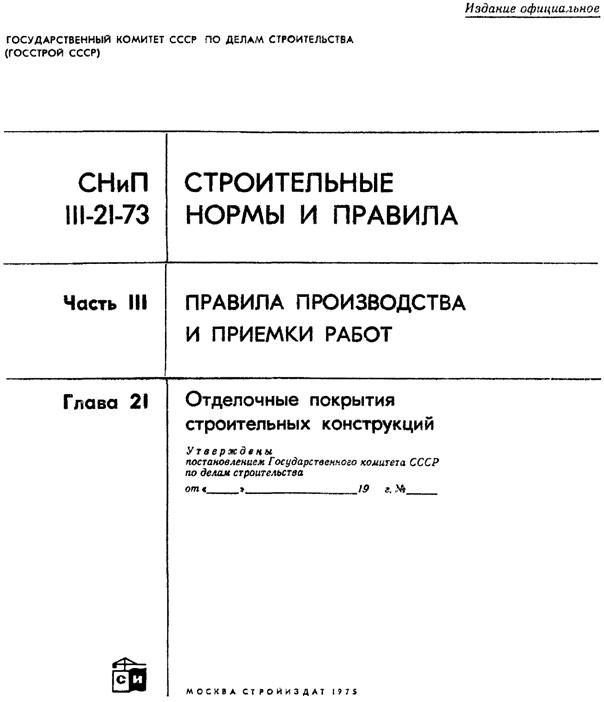
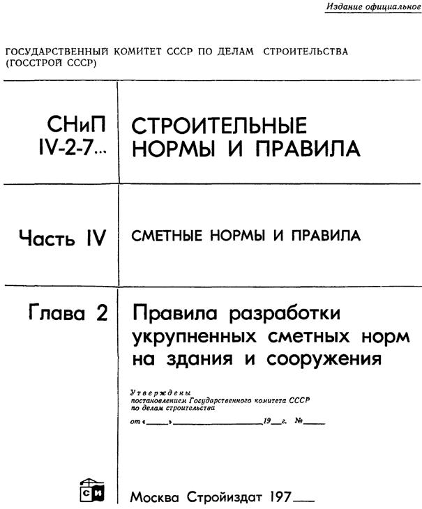
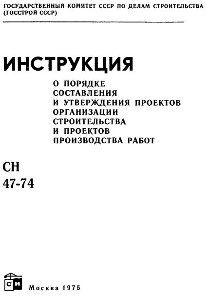
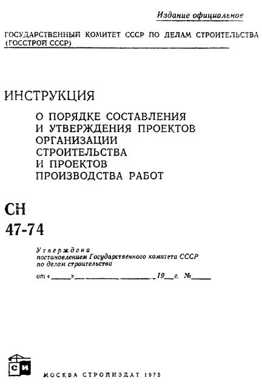
|
Государственный
комитет СССР |
Строительные нормы и правила1 |
Шифр |
|
Наименование
главы СНиП |
Взамен |
|
Внесены
|
Утверждены от «__» ________ 19__ г. № ___ |
Срок введения в действие «__» ________ 19__ г. |
________
1При оформлении норм и правил, не включенных в СНиП, а также инструкций слова «и правила» опускаются.
ОФОРМЛЕНИЕ ОБЛОЖКИ ВЕДОМСТВЕННОГО
ИЛИ РЕСПУБЛИКАНСКОГО НОРМАТИВНОГО ДОКУМЕНТА
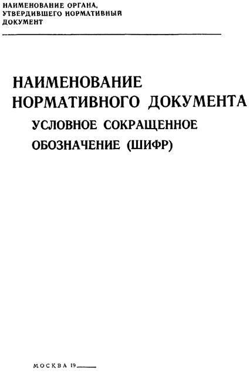
ОФОРМЛЕНИЕ ТИТУЛЬНОГО ЛИСТА ВЕДОМСТВЕННОГО
ИЛИ РЕСПУБЛИКАНСКОГО НОРМАТИВНОГО ДОКУМЕНТА
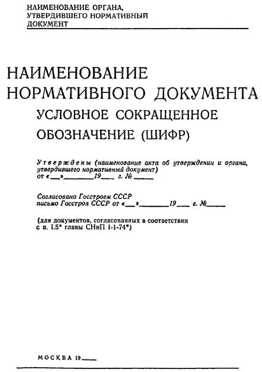
ОФОРМЛЕНИЕ 1-й СТРАНИЦЫ ТЕКСТА
ВЕДОМСТВЕННОГО НОРМАТИВНОГО ДОКУМЕНТА
|
Наименование министерства (то же, сокращенное в скобках) |
Ведомственные |
ВСН 00-00 |
|
Наименование документа |
Сокращенное |
|
|
Взамен |
|
Внесены (наименование организации) |
Утверждены (наименование
акта, от «__» ________ 19__ г. № __ |
Срок введения в действие «__» ________ 19__ г. № ___ |
ОФОРМЛЕНИЕ 1-Й СТРАНИЦЫ ТЕКСТА
РЕСПУБЛИКАНСКОГО НОРМАТИВНОГО ДОКУМЕНТА
|
Наименование
органа, |
Республиканские
|
РСН 00-00 |
|
Наименование документа |
Сокращенное
наименование |
|
|
Взамен |
|
Внесены (наименование
|
Утверждены (наименование
акта и органа, от «__» ________ 19__ г. № __ |
Срок введения в действие «__» ________ 19__ г. № ___ |
СВОДКА ЗАКЛЮЧЕНИЙ ПО ПРОЕКТУ
(ПОЛНОЕ НАИМЕНОВАНИЕ НОРМАТИВНОГО ДОКУМЕНТА)
Директор (начальник, управляющий) __________________________________________ (подпись - инициалы и фамилия) Ответственный руководитель работы ___________________________________ (подпись - инициалы н фамилия) |
КНИГА РЕГИСТРАЦИИ УТВЕРЖДЕННЫХ
НОРМАТИВНЫХ ДОКУМЕНТОВ (ФОРМА)
|
Дата регистрации |
№ нормативного документа (сокращенное обозначение, шифр) |
Полное наименование |
Взамен какого нормативного документа или утверждается впервые |
Дата, № постановления об утверждении и орган, утвердивший нормативный документ |
Срок введения в действие |
Министерство (ведомство) или организация, внесшая проект нормативного документа на утверждение |
Организация, разработавшая проект нормативного документа |
Подразделение, подготовившее нормативный документ к утверждению, и фамилия ответственного исполнителя |
Отметка о пересмотре или отмене нормативного документа или о внесении изменений и дополнений |
|
1 |
2 |
3 |
4 |
5 |
6 |
7 |
8 |
9 |
10 |
|
|
|
|
|
|
|
|
|
|
|
ПЕРЕЧЕНЬ
МАТЕРИАЛОВ, ПОДЛЕЖАЩИХ СДАЧЕ В АРХИВ
(ПОЛНОЕ НАИМЕНОВАНИЕ НОРМАТИВНОГО ДОКУМЕНТА)
Начальник отдела (подотдела) _________________________________________________ (подпись) Исполнитель _______________________________________________________________ (подпись) Опись подлежащих сдаче в архив документов должна оформляться в соответствии с Инструкцией по делопроизводству. |
||||||||||
ОБРАЗЕЦ ТЕКСТА ШТАМПА НА УТВЕРЖДЕННОМ НОРМАТИВНОМ ДОКУМЕНТЕ
|
ГОСУДАРСТВЕННЫЙ
КОМИТЕТ СССР Утвержден со сроком введения в действие с «__» _______ 19__ г. Постановление Госстроя СССР от «__» _______ 19__ г. № ______ Начальник управления (отдела), подготовившего документ к утверждению ______________________________________ (подпись) «__» _______ 19__ г. |
ОФОРМЛЕНИЕ ИЗМЕНЕНИЯ И ДОПОЛНЕНИЯ НОРМАТИВНОГО ДОКУМЕНТА
Изменение и дополнение (или изменение, дополнение) ____________________________ ___________________________________________________________________________ (полное наименование
нормативного документа и его условное сокращенное обозначение, дата и номер Пункт (№ пункта) изложить в следующей редакции или: Пункт (№ пункта) признать утратившим силу или: Абзац (номер абзаца прописью) пункта (№ пункта) изложить в следующей редакции (или дополнить) или: Пункт (№ пункта) приложения (номер и наименование приложения) изложить в следующей редакции или: Таблицу (№ таблицы) изложить в следующей редакции и т.д. ______________________ ___________________________________________________________________________ [подпись ответственного лица - начальника (заместителя) управления (отдела), представляющего материал на утверждение] |